UI/UX CASE STUDY · APLIKACIJA ZA UPOZNAVANJEUI/UX CASE STUDY · DATING APP
Korisnici postaju prezasićeni swipovanjem na dejting aplikacijama. Možda je vreme za drugačiji pristup.Users are burning out on swiping through dating apps. Maybe it is time for a different approach.
Ne koristim ovakve aplikacije, jer sam svog partnera upoznala pre novog doba aplikacija, ali imam drugarice i sestre koje ih koriste. Uz njihove svakodnevne komentare da im se to sve „smučilo” i da ne mogu da nađu odgovarajuću osobu, krenula sam u istraživanje.
Pošto učim i radim UI/UX dizajn, razmišljala sam kako mogu svojim znanjem da im pomognem da na dejting aplikacijama pronađu prave osobe.I do not use apps like these myself because I met my partner before the age of dating apps, but I have friends and sisters who do. Listening to them say that they were fed up with it all and could not find the right person, I started looking into why.
Since I study and work in UI/UX design, I kept asking myself how I could use that knowledge to help them actually find the right person on dating apps.
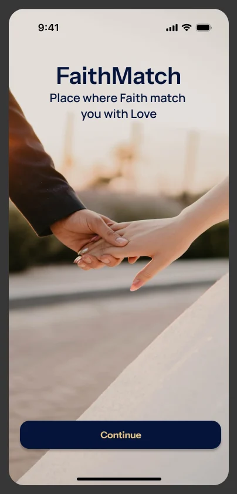
Moja ulogaMy role
UI/UX dizajn, end‑to‑endUI/UX design, end‑to‑end
Tip projektaProject type
Projekat sa kursaCourse project
AlatTools
Figma
PlatformaPlatform
iOS
PeriodTimeline
avgust do oktobar 2026.August to October 2026
01 · uvodintroduction
Počela sam da čitam komentare korisnika koji koriste ove aplikacije, a žele da nađu brak ili dugoročnu vezu, i stekla sam utisak da se osećaju zanemareno na tradicionalnim platformama za upoznavanje.
Možda bih rekla da se osećaju čak i usamljeno i prazno, jer se sve svodi na površno pretraživanje i spajanje zbog fizičkog izgleda, a rezultat toga budu kratka dopisivanja i par sastanaka bez ostvarenja glavnog cilja zbog kojeg žele da koriste ove aplikacije.
Razmišljanje i interesovanje za proces rešavanja samog problema uvlačili su me sve dublje i dublje u tematiku i suštinu celog problema i procesa nalaska odgovarajućeg partnera preko aplikacija. I started by reading comments from people who use these apps and want marriage or a long‑term relationship, and I came away with the impression that they feel overlooked on traditional dating platforms.
I would go further and say they feel lonely and empty, because everything comes down to superficial browsing and matching on looks, and the result is a few short exchanges and a couple of dates that never reach the goal they joined for.
Thinking about how that problem could be solved pulled me deeper and deeper into the subject, and into the heart of what finding the right partner through an app really involves.
02 · ProblemThe problem
Aplikacije za upoznavanje prolaze kroz veliku krizu, zbog koje se većina korisnika oseća iscrpljeno.Dating apps are going through a deep crisis that leaves most users feeling exhausted.
Prema anketi Forbes Health iz 2024. godine (1.000 odraslih iz SAD koji su u poslednjih godinu dana koristili aplikacije za upoznavanje), 78% korisnika navodi da se ponekad, često ili uvek oseća iscrpljeno zbog aplikacija, a kod milenijalaca i Gen Z taj broj je još veći (80% i 79%). Korisnici često navode da provode previše vremena na prevlačenju profila ulevo i udesno, ali bez pronalaska iskrene i kvalitetne veze na duži vremenski period. Šta iscrpljuje korisnike?
Sindrom zamora (dating app burnout): beskonačno swipovanje umara umesto da zabavlja.
Nedostatak
bliskosti: oko 40% ispitanika navodi da je najveći razlog njihove iscrpljenosti to što ne mogu da pronađu dobru konekciju.
Loša
iskustva: 41% ispitanika navodi da ih je neko naglo ignorisao bez objašnjenja (ghosting), a 38% da im se neko lažno predstavljao (catfishing). Prema istom istraživanju, takva iskustva doprinose iscrpljenosti.
Poslovni
model aplikacija:
neki kritičari smatraju da su postojeće platforme dizajnirane tako da te zadrže u statusu „slobodne osobe” i pod stalnom dozom dopamina, umesto da ti stvarno pomognu da nađeš partnera.
Ova aplikacija je zato osmišljena sa skroz drugačijim konceptom i pristupom, ali je takođe namenjena korisnicima kojima je vera važan deo života, a vrednosti i principi neizostavne stavke u pronalaženju pravog partnera koji će koračati sa tobom kroz život, a ne samo popiti piće i provesti noć sa tobom. Problem u pronalasku odgovarajuće osobe za ove korisnike je mnogo dublji.
Njihova očekivanja su iskrenost, posvećenost, poštovanje, ali je to retko vidljivo na profilu od tri fotografije i jedne rečenice. Tako nastaje nepoverenje: „Kako da znam ko je ovde ozbiljan, a ko samo gleda profile? Kako da znam da je ovaj profil pravi ili je samo još jedan lažni bot?” To nepoverenje je pravi problem koji sam htela da rešim.
According to a 2024 Forbes Health survey (1,000 US adults who had used a dating app in the past year), 78% of users say they sometimes, often or always feel exhausted by dating apps, rising to 80% among millennials and 79% among Gen Z. Users often say they spend far too much time swiping profiles left and right without ever finding an honest, lasting relationship.
What is exhausting users?
Dating app burnout: endless swiping has turned into monotony and a source of anxiety instead of fun.
Lack of closeness: around 40% of respondents say the main reason for their exhaustion is that they cannot find a good connection.
Bad experiences: 41% of respondents say someone suddenly cut off contact without explanation (ghosting), and 38% say someone misrepresented themselves to them (catfishing). According to the same research, experiences like these contribute to burnout.
The business model: some critics believe that existing platforms are designed to keep you single and dopamine‑fed, rather than to actually help you find a partner.
That is why this app was conceived with a completely different concept and approach, and it is aimed at users for whom faith is an important part of life, and for whom values and principles are non‑negotiable in finding the right partner: someone who will walk through life with you, not just have a drink and spend the night. For these users the problem of finding the right person runs much deeper.
Their expectations, such as honesty, commitment and respect, are rarely visible on a profile made of three photos and one line of text. That breeds distrust: “How do I know who here is serious and who is just browsing profiles? How do I know this profile is real and not another fake bot?” That distrust is the real problem I set out to solve.
Kome je aplikacija namenjenaWho the app is for
FaithMatch aplikacija je namenjena:
Hrišćanima i muslimanima
Ljudima koji traže ozbiljnu vezu ili brak
Korisnicima kojima su moralne vrednosti i vera važan deo života
Poseban fokus je na korisnicima kojima konvencionalne aplikacije za upoznavanje ne odgovaraju.
The FaithMatch app is for:
Christians and Muslims
People looking for a serious relationship or marriage
Users for whom moral values and faith are an important part of life
The particular focus is on users who are not well served by conventional dating apps.
Beskonačno listanje bez rezultata: iscrpljenost zbog aplikacija navodi 78% korisnika (Forbes Health, 2024).Endless scrolling with nothing to show for it: 78% of users report feeling exhausted by dating apps (Forbes Health, 2024).
ŠTA URADITI I PROMENITI?WHAT SHOULD BE DONE DIFFERENTLY?
Ako već postoji takav problem, šta bi trebalo uraditi i promeniti da korisnici stvarno nađu ono što traže i da vrate VERU U PRAVU LJUBAV i iskrena osećanja?
Tako se rodila ideja o malo drugačijoj dejting aplikaciji, ♥FAITH MATCH!
If a problem like this exists, what should be done and changed so that users really find what they are looking for, and so that FAITH IN TRUE LOVE and honest feelings are restored?
That is how the idea of a slightly different dating app was born, ♥FAITH MATCH!
03 · istraživanje i analiza03 · research and analysis
Pre ekrana, prvo sam slušala ljudeBefore the screens, I listened to people first
Faze istraživanja i analize su jako važne zbog razumevanja problema korisnika i njihovih iskustava u korišćenju aplikacija. Da bih pristupila radu na dizajnu aplikacije, morala sam prvo da razumem problem korisnika i da dođem do tačne ideje o njegovom rešavanju.
Faza istraživanja za ovaj projekat sastoji se od tri dela: 1. Analiza konkurencije 2. Anketa 3. Sinteza: user persone
Zato hajde da počnemo!
The research and analysis phases matter enormously, because they are how you come to understand users’ problems and their experience of these apps. Before I could start designing, I first had to understand the user’s problem and arrive at a precise idea of how to solve it.
The research phase for this project has three parts: 1. Competitive analysis 2. Survey 3. Synthesis: user personas
Analiza konkurencije je nešto od čega sam počela, ali sam pre samog početka morala da definišem svoj cilj koji sam želela da postignem ovom analizom. CILJ: utvrditi šta popularne aplikacije rade dobro, gde ostavljaju prazninu u korisničkom iskustvu i zašto korisnici nisu zadovoljni. Analizirala sam tri aplikacije koje su mi bile inspiracija, ne da bih ih kopirala, već da bih razumela koje njihove odluke vredi zadržati, a koje svesno izbeći. Šta korisnici stvarno govore o tri najveće aplikacije za upoznavanje, sažeto iz recenzija, foruma i stručnih pregleda iz 2026. godine. The competitive analysis is where I began, but before starting I had to define the goal I wanted this analysis to reach. GOAL: to establish what the popular apps do well, where they leave a gap in the user experience, and why users are unhappy. I analysed three apps that inspired me, not to copy them, but to understand which of their decisions are worth keeping and which to avoid deliberately. What users really say about the three biggest dating apps, distilled from reviews, forums and expert write‑ups from 2026.
Poređenje po ključnim kriterijumimaCompared on the criteria that matter
Svaka kolona sažima ono što se najčešće ponavlja u korisničkim iskustvima.Each column summarises what recurs most in user experiences.
Skup premium, slabije van velikih gradovaPricey premium, thin outside big cities
Težak otkaz pretplateHard to cancel the subscription
Nedavna promenaRecent change
—
—
Ukinuto pravilo „žena piše prva” (11. avg. 2026)“Women message first” rule dropped (11 Aug 2026)
*Procenat negativnih recenzija prema analizi Unstar (2026); recenzije generalno privlače više nezadovoljnih nego zadovoljnih korisnika, pa brojeve treba čitati kao relativni odnos među aplikacijama, ne apsolutnu ocenu.*Share of negative reviews per Unstar’s 2026 analysis; review sites attract more unhappy than happy users, so read the numbers as a relative ranking, not an absolute score.
Kratka sintezaShort synthesis
Tinder pobeđuje po dostupnosti i broju korisnika, ali to je i njegov najveći problem, jer masa privlači botove i scam profile, a naplata i podrška su najčešće pritužbe u recenzijama. Najbolji je kad je cilj širina izbora, ne dubina.Tinder wins on reach and sheer numbers, which is also its biggest problem: scale attracts bots and scam profiles, while billing and support are the most common complaints in reviews. It’s best when the goal is breadth, not depth.
Hinge ima najbolju reputaciju kada su u pitanju ozbiljnije namere, jer promptovi i detaljniji profili filtriraju površnost. Od tri analizirane aplikacije ima i najmanji udeo negativnih recenzija (28%), a korisnici koji su prešli sa Tindera ili Plenty of Fish kao razlog navode „manje botova”. Cena tog kvaliteta je manji broj besplatnih interakcija i slabiji doseg van velikih gradova.Hinge has the best reputation for serious intent, because prompts and fuller profiles filter out superficiality. Of the three apps analysed, it also has the lowest share of negative reviews (28%), and users who switched from Tinder or Plenty of Fish cite “fewer bots” as the reason. The price of that quality is fewer free interactions and thinner reach outside big cities.
Bumble je do avgusta 2026. imao jasnu identitetsku prednost (žena piše prva, 24h rok), što je privlačilo korisnice kojima je bitna kontrola nad komunikacijom. Ukidanjem tog pravila aplikacija se sada oslanja na reputaciju sigurnosti i stabilnosti, ali ostaje da vidimo da li će to biti dovoljno da se zadrži lojalna baza korisnika.Bumble had a clear identity advantage until August 2026 (women message first, a 24h window), which drew users who value control over messaging. With that rule gone, it now leans on its reputation for safety and stability. Whether that holds its loyal base remains to be seen.
Napomena o metodologiji: analiza je zasnovana na javno dostupnim recenzijama (ConsumerAffairs i analize recenzija koje je objavio Unstar) i stručnim pregledima objavljenim tokom 2026. godine, ne na naučnoj anketi. Sajtovi za recenzije po prirodi privlače više nezadovoljnih nego zadovoljnih korisnika, pa apsolutne procente treba tumačiti oprezno — relativni odnos između aplikacija je pouzdaniji signal od tačnih brojeva.A note on method: this is based on publicly available reviews (ConsumerAffairs and review analyses published by Unstar) and expert write‑ups published during 2026, not a scientific survey. Review sites attract more unhappy than happy users, so treat the absolute percentages with care: the relative ranking between apps is the more reliable signal.
Kada sam došla do saznanja šta muči korisnike koji koriste ovakve aplikacije, odlučila sam se na anketu. CILJ: potvrditi da li su ljudi zainteresovani za korišćenje ove vrste usluge. Pre bilo kakvog rada, nisam mogla a da se ne zapitam: da li će dizajniranje ove aplikacije biti dobra ideja?
Da bih pronašla odgovor na ovo pitanje, kreirala sam anketu. Anketa istražuje gde trenutne aplikacije (Tinder, Hinge, Bumble) razočaravaju korisnike i kako reaguju na koncept FaithMatch-a: glasovni/video uvod i pitanja o vrednostima pre nego što se dvoje ljudi uopšte spoji. Once I understood what troubles the people who use these apps, I decided to run a survey. GOAL: to confirm whether people are interested in using this kind of service. Before doing any work, I could not help asking myself: would designing this app actually be a good idea?
To find the answer, I created a survey. It explores where the current apps (Tinder, Hinge, Bumble) let users down, and how they react to the FaithMatch concept: a voice or video intro and questions about values before two people are ever matched.
INFORMACIJE O ANKETISURVEY INFORMATION
UzorakSample
n = 20 (prijatelji, poznanici)(friends, acquaintances)
PopulacijaPopulation
Bivši, aktivni i budući korisnici dejting aplikacijaFormer, current and future dating‑app users
InstrumentInstrument
12 pitanja, mešoviti tip12 questions, mixed type
Profil ispitanikaRespondent profile
Q1–Q4
Anketu sam ograničila na uzrast od 18 do 45 godina i obuhvatila sam redovne korisnike ovih aplikacija, kao i potencijalne, koji to zbog singl statusa mogu da postanu. Ispitanici su prijatelji i poznanici, pa rezultate čitam kao prve signale koji pokazuju pravac, a ne kao procenu za sve korisnike. Anketa nije pitala o veri ispitanika, pa rezultati ne govore direktno o ciljnoj grupi.I limited the survey to ages 18 to 45 and included both regular users of these apps and potential ones who, given their single status, could become users. The respondents are friends and acquaintances, so I read the results as early signals that point a direction, not as an estimate for all users. The survey did not ask about respondents’ faith, so the results do not speak directly to the target group.
Polovina ispitanika ocenila je kvalitet svojih mečeva na postojećim aplikacijama ocenom 1 ili 2 (od 5), a 80% je reklo da im se profil osobe često ili ponekad ne poklopi sa utiskom uživo na prvom sastanku. Taj rezultat je bio dodatni vetar u leđa mojoj ideji o dejting aplikaciji.Half of the respondents rated the quality of their matches on existing apps 1 or 2 out of 5, and 80% said the person’s profile often or sometimes did not match the impression they got in person on a first date. That result gave my idea for a dating app extra wind in its sails.
Zadovoljstvo kvalitetom mečevaSatisfaction with match quality
Q5 · 1 = uopšte nisam zadovoljan/na, 5 = veoma sam zadovoljan/naQ5 · 1 = not satisfied at all, 5 = very satisfied
1 — najniže1 — lowest15%
235%
320%
420%
5 — najviše5 — highest10%
prosek 2,75 / 5 · 50% ocenjuje sa 1–2average 2.75 / 5 · 50% rate it 1–2
Neslaganje profila i stvarnostiProfile versus reality
Q6 · „Koliko često se osoba uživo razlikuje od profila?”Q6 · “How often does the person in real life differ from the profile?”
ČestoOften30%
PonekadSometimes50%
RetkoRarely15%
NikadNever5%
80% bira „često” ili „ponekad”80% choose “often” or “sometimes”
Najčešće pritužbe na postojeće aplikacijeThe most common complaints about existing apps
Q7 · višestruki izbor (do 3), rangirano po učestalostiQ7 · multiple choice (up to 3), ranked by frequency
Fokus na izgleduFocus on looks65%
Utisak pre susretaImpression before meeting60%
Swipe bez rezultataSwiping with no result55%
Lažni profili/botoviFake profiles / bots45%
Skupe pretplateExpensive subscriptions25%
Korisnička podrškaCustomer support10%
Reakcija na FaithMatch konceptReaction to the FaithMatch concept
Q8–Q11
Ispitanicima sam opisala glavnu ideju svoje aplikacije: kratak glasovni ili video uvod i pitanja o ličnosti/vrednostima pre nego što se profili uopšte prikažu za mečovanje. Reakcije su bile pozitivne, verovatno zato što su ispitanici zasićeni konceptom popularnih aplikacija. Ideja o promeni je došla kao osveženje.I described the core idea of my app to the respondents: a short voice or video intro and questions about personality and values before profiles are shown for matching at all. The reactions were positive, probably because respondents are saturated with the concept behind the popular apps. The idea of a change came as a breath of fresh air.
Privlačnost glasovnog/video uvodaAppeal of the voice / video intro
Q8 · 1 = uopšte ne privlači, 5 = veoma privlačiQ8 · 1 = not appealing at all, 5 = very appealing
15%
20%
320%
435%
540%
prosek 4,05 / 5 · 75% ocenjuje sa 4–5average 4.05 / 5 · 75% rate it 4–5
Privlačnost pitanja o ličnosti/vrednostimaAppeal of questions about personality and values
Q9 · 1 = uopšte ne privlači, 5 = veoma privlačiQ9 · 1 = not appealing at all, 5 = very appealing
10%
210%
325%
440%
525%
prosek 3,80 / 5 · 65% ocenjuje sa 4–5average 3.80 / 5 · 65% rate it 4–5
Da li bi ovo poboljšalo kvalitet mečevaWould this improve match quality
Q10 · 1 = sigurno ne, 5 = sigurno daQ10 · 1 = definitely not, 5 = definitely yes
10%
210%
320%
445%
525%
prosek 3,85 / 5 · 70% ocenjuje sa 4–5average 3.85 / 5 · 70% rate it 4–5
Verovatnoća da bi probali FaithMatchLikelihood of trying FaithMatch
Q11 · 1 = sigurno ne bih, 5 = sigurno bihQ11 · 1 = definitely would not, 5 = definitely would
15%
25%
315%
440%
535%
prosek 3,95 / 5 · 75% ocenjuje sa 4–5, 10% sa 1–2average 3.95 / 5 · 75% rate it 4–5, 10% rate it 1–2
Zadovoljstvo trenutnim aplikacijama i spremnost da probaju FaithMatchSatisfaction with current apps and willingness to try FaithMatch
Udeo ispitanika koji su ocenili sa 4 ili 5 (top-2 box, od 5)Share of respondents rating 4 or 5 (top‑2 box, out of 5)
Zadovoljstvo kvalitetom mečeva na aktuelnim aplikacijama (Q5)Satisfaction with match quality on current apps (Q5)30%
naspramversus
Verovatnoća da bi probali da koriste FaithMatch aplikaciju (Q11)Likelihood of trying the FaithMatch app (Q11)75%
Razlika od +45 procentnih poena pokazuje interesovanje za koncept, što treba proveriti testiranjem.A gap of +45 percentage points shows interest in the concept, which still needs to be validated through testing.
Neki od komentara su bili…Some of the comments were…
Q12 · otvoreni odgovoriQ12 · open answers
“
Konačno neka aplikacija koja se malo više bavi problemom zbog kojeg mi treba. Ne mogu više da se nedeljama dopisujem sa nekim da bih na prvom sastanku shvatila da sam bezveze gubila vreme sa tom osobom! Finally an app that deals a bit more with the problem I actually need it for. I cannot spend weeks texting someone only to realise on the first date that I wasted my time with that person! ”
— Tijana, 40
“
Zavisi koliko je dug taj upitnik o ličnosti – ako je prekomplikovan, ljudi će odustati na pola puta. It depends on how long that personality questionnaire is. If it is too complicated, people will give up halfway. ”
— Milica, 26
“
Zvuči dobro, ali me zanima koliko bi ljudi zaista snimilo glasovni uvod, jer se mnogi toga stide. It sounds good, but I wonder how many people would really record a voice intro, since a lot of them are shy about it. ”
— Nikola, 31
“
Zanimljiva mi je ideja aplikacije, ali se nadam da te opcije neće imati skupu cenu pretplate, jer mi je to već sada problem na ovim postojećim aplikacijama. Značilo bi mi bolje rešenje za to. I find the idea of the app interesting, but I hope those options will not come with an expensive subscription, because that is already a problem for me on the existing apps. A better solution there would mean a lot. ”
— Jelena, 34
03.3 · sinteza: user persone03.3 · synthesis: user personas
Nakon analize konkurencije i ankete sa korisnicima, bilo mi je mnogo lakše da kreiram korisničke osobe za ovaj projekat. Pošto su persone zasnovane na odgovorima ispitanika iz ankete i komentarima korisnika, pomogle su mi da donosim bolje dizajnerske odluke i generišem ideje, stavljajući korisnika na prvo mesto. After the competitive analysis and the user survey, creating the personas for this project was far easier. Because the personas are based on the survey respondents’ answers and user comments, they helped me make better design decisions and generate ideas while keeping the user first.
Maya, 31
Marketing · ChicagoMarketing · Chicago
Ciljevi i motivacijaGoals and motivation
Pronalaženje stabilnog, dugoročnog partnera spremnog za ozbiljnu vezu
Finding a stable, long‑term partner who is ready for a serious relationship
Izgradnja odnosa zasnovanog na poverenju, poštovanju i zajedničkim vrednostima
Building a relationship based on trust, respect and shared values
Partner koji deli istu veru i praktikuje je u svakodnevnom životu
A partner who shares the same faith and lives it in everyday life
Izbegavanje ljudi koji su neodlučni ili emocionalno nestabilni
Avoiding people who are indecisive or emotionally unstable
EMOCIONALNE POTREBEEMOTIONAL NEEDS
Potreba za jasnoćom od samog početka → bez skrivenih namera
A need for clarity from the very start → no hidden intentions
Potreba za sigurnošću i stabilnošću → predvidljivo iskustvo
A need for safety and stability → a predictable experience
Potreba za emocionalnom sigurnošću → bez pritiska i površnog ponašanja
A need for emotional safety → no pressure, no shallow behaviour
Potreba za poštovanjem vere i vrednosti → bez osuđivanja i pravdanja
A need for her faith and values to be respected → no judgment, no explaining herself
FRUSTRACIJE I IZAZOVIFRUSTRATIONS AND CHALLENGES
Ponavljajuće iskustvo veza koje dobro počnu, ali se prebrzo prekinu
A repeating experience of relationships that start well but end too soon
Osećaj da mnogi korisnici nisu zaista spremni za ozbiljnu vezu, iako tvrde suprotno
A sense that many users are not really ready for a serious relationship, though they claim otherwise
Teškoće sa poverenjem u namere – reči se ne poklapaju sa delima
Difficulty trusting intentions: words do not match actions
Emocionalni umor od stalnog kretanja ispočetka
Emotional fatigue from constantly starting over
Obrasci ponašanjaBehaviour patterns
Veoma pažljivo čita profile pre nego što stupi u kontakt
Reads profiles very carefully before making contact
Više voli manji broj kvalitetnih podudaranja nego mnoštvo opcija
Prefers a small number of quality matches over a flood of options
Okleva da započne razgovor osim ako ne oseti da postoji stvaran potencijal
Hesitates to start a conversation unless she senses real potential
Brzo prekida komunikaciju kada primeti nejasne ili neozbiljne namere
Ends a conversation quickly when intentions seem unclear or casual
Ključni problem:Key problem:
„Umorna sam od emocionalnog ulaganja u nešto što se završava čim postane stvarno. Razmišljam da izbrišem ove aplikacije da se malo odmorim od svih pogrešnih ljudi!”“I am tired of investing emotionally in something that ends the moment it becomes real. I am thinking of deleting these apps just to take a break from all the wrong people!”
Jason, 40
IT · ChicagoIT · Chicago
Ciljevi i motivacijaGoals and motivation
Pronalaženje partnerke sa kojom deli veru i vrednosti, ne samo trenutnu hemiju
Finding a partner who shares his faith and values, not just momentary chemistry
Izgradnja ozbiljne veze bez igara, nejasnih signala i „ostavljanja na čekanju”
Building a serious relationship without games, mixed signals or being left on hold
Upoznavanje osobe kakva zaista jeste, van uređene slike profila
Getting to know a person as they really are, beyond a curated profile
Želi da mu se poveruje da su njegove namere ozbiljne, a ne da bude „još jedan swiper”
Wants his intentions to be believed as serious, not to be seen as “just another swiper”
EMOCIONALNE POTREBEEMOTIONAL NEEDS
Potreba da bude viđen kao osoba
→ prihvatanje vrlina i mana osobe
A need to be seen as a person → acceptance of his strengths and flaws
Potreba za poverenjem u ono što vidi → verodostojni profili
A need to trust what he sees → credible profiles
Potreba da oseti napredak
→ vidljiva, iskrena povratna informacija umesto tišine
A need to feel progress → visible, honest feedback instead of silence
Potreba da zajednička vera bude temelj veze
→ poštovanje svog shvatanja vere
A need for shared faith to be the foundation of the relationship → respect for how he understands his faith
FRUSTRACIJE I IZAZOVIFRUSTRATIONS AND CHALLENGES
Šalje promišljene poruke koje ostanu bez odgovora ili razgovor „umre” posle par dana
Sends thoughtful messages that go unanswered, or the conversation dies after a couple of days
Oseća da mora uvek on prvi da piše i stalno iznova dokazuje da mu je ozbiljno
Feels he always has to message first and prove over and over that he is serious
Nizak broj mečeva u odnosu na trud uložen u profil i poruke
A low number of matches relative to the effort he puts into his profile and messages
Sumnja da su neki profili neaktivni ili lažni, pa gubi vreme na razgovore koji nikuda ne vode
Suspects some profiles are inactive or fake, so he wastes time on conversations that lead nowhere
Obrasci ponašanjaBehaviour patterns
Piše personalizovane poruke, ali brzo odustaje ako ne dobije odgovor
Writes personalised messages, but gives up quickly if he gets no reply
Pažljivo čita i upoznaje profil pre nego što uloži svoje vreme u razgovor
Reads and studies a profile carefully before investing his time in a conversation
Radije ulaže u manje, ozbiljnije razgovore nego u masovno slanje poruka
Prefers fewer, more serious conversations over mass messaging
Povlači se iz komunikacije čim primeti nesklad između reči i ponašanja sagovornice
Withdraws from a conversation as soon as he notices a mismatch between words and behaviour
Ključni problem:Key problem:
„Ne želim više da se upecam na lepu sliku devojke i da se ja uvek prvi javljam, a ona da me iskulira i ostavi bez odgovora. Želim da mogu bolje da je upoznam i pre samog dopisivanja.”“I do not want to get hooked on a pretty picture again, and always be the one who messages first and then get ignored and left without a reply. I want to be able to get to know her better before the texting even starts.”
04 · VAŽNE ODLUKE PRE DIZAJNAKey decisions before design
Odluke koje sam donela pre početka rada na dizajnu aplikacijeThe decisions I made before starting work on the app’s design
01
Namera treba da bude vidljiva od početkaIntent should be visible from the start
Onboarding sadrži pitanja o ličnosti, veri, vrednostima i navikama, pa već na početku daje uvid u nameru korisnika.Onboarding asks about personality, faith, values and habits, so it gives insight into a user’s intent right from the start.
02
Profil govori o osobi, ne o pozi na sliciThe profile shows the person, not the pose
Glasovno predstavljanje, kratak video o tebi i svakodnevni story‑ji otkrivaju ono što fotografija ne može da kaže.A voice intro, a short video about you and everyday stories reveal what a photo can’t say.
03
Manje predloga, sa objašnjenjemFewer suggestions, explained
Uvela sam ograničen broj dnevnih predloga i jasno „zašto se poklapate”, zbog pojave „dosadnog” swipovanja.I introduced a limited number of daily suggestions and a clear “why you match”, because swiping had become tedious.
04
Kontrola je uvek u rukama korisnikaControl stays with the user
Opcije blokiranja i prijave moraju da postoje u aplikaciji. Bolje je sprečiti problem na vreme nego ga rešavati kasnije.Blocking and reporting options must be built into the app. It is better to prevent a problem in time than to deal with it later.
05 · Vizuelni identitetVisual identity
Nebesko poverenje i svetlostHeavenly trust and light
Pošto sam izrazito vizuelna osoba, koja sve vidi i pamti u bojama i slikama, bilo mi je jako važno da pronađem i odredim odgovarajuće boje za ovu aplikaciju. Kroz svoje boje aplikacija treba korisniku da otkrije svoju priču i nameru.
Paletu sam birala da nosi značenje, ne samo da „lepo izgleda”. - Navy plava je boja poverenja i stabilnosti; - Šampanjac‑zlatna nosi duhovnost i trajnost (venčani prsten); - Topla ivory pozadina znači čistotu namere i ne zamara oči.Since I am a deeply visual person, someone who sees and remembers everything in colours and images, finding and settling on the right colours for this app mattered enormously to me. Through its colours the app should reveal its story and its intent to the user.
I chose the palette to carry meaning, not just to “look nice”. - Navy blue is the colour of trust and stability; - Champagne‑gold carries spirituality and permanence (the wedding ring); - A warm ivory background stands for purity of intent and is easy on the eyes.
Navy Blue
#0B1A3A · poverenje, dubinatrust, depth
Champagne
#DDB877 · svetlost, trajnostlight, permanence
Ivory
#FAF7F1 · čistota, mirpurity, calm
Instrument Sans
Aa
Heading · 40 / 32 / 24
Body 16 · Regular / Semibold / Bold
LogoLogo
FaithMatch
Dva isprepletana prstena i srce — sjedinjenje i posvećenost.Two interlocked rings and a heart, symbolising union and commitment.
06 · TOK PROCESA06 · PROCESS FLOW
Evo toka za jedan od mnogih procesaHere is the flow for one of many processes
Stvaranje iskustva koje pokriva široku grupu korisnika, a istovremeno rešava njihove probleme sa kojima se susreću na drugim aplikacijama bio je moj najveći izazov za ovaj projekat. Da bih to mogla da uradim, morala sam pažljivo da isplaniram svaki deo aplikacije.
Prvo krećem od skiciranja UX MAPE. Ovo je početna mapa na kojoj kasnije još radim dodavanjem opcija, ali mi je ovo dovoljno za početak.
Creating an experience that covers a wide group of users while at the same time solving the problems they run into on other apps was my biggest challenge on this project. To manage it, I had to plan every part of the app carefully.
I start by sketching the UX MAP. This is the initial map, which I keep working on later by adding options, but it is enough to begin with.
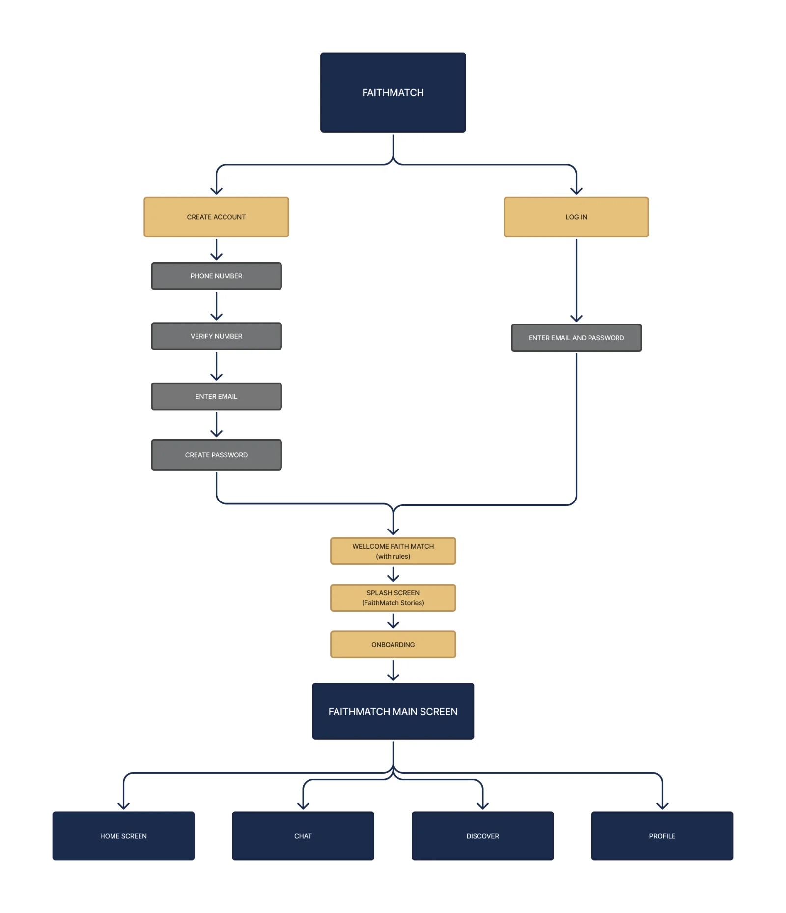
WireframeWireframe
Wireframe je trenutak kada istraživanje prvi put dobija oblik. Počinjem skicama na papiru, bez boja i detalja, jer tada razmišljam samo o tome šta korisnik treba da vidi, kojim redom, i koji je njegov sledeći korak. Kada rasporedim ključne ekrane, prenosim ih u Figmu kao low-fi wireframe i povezujem u tok, od prijave do prvog razgovora.
U ovoj fazi ništa nije konačno, jer ekrane stalno premeštam, spajam i brišem sve dok tok ne postane prirodan. Pri svakoj promeni razmišljam o tome da li korisnik sada može lakše da pronađe nekoga ko traži isto što i on/ona.
The wireframe is the moment research first takes shape. I start with paper sketches, with no colour or detail, because at that stage I only think about what the user needs to see, in what order, and what their next step is. Once the key screens are laid out, I move them into Figma as low-fi wireframes and link them into a flow, from sign-up to the first conversation.
Nothing is final at this stage: I keep moving, merging and deleting screens until the flow feels natural. With every change, I ask myself whether the user can now more easily find someone who wants the same thing they do.
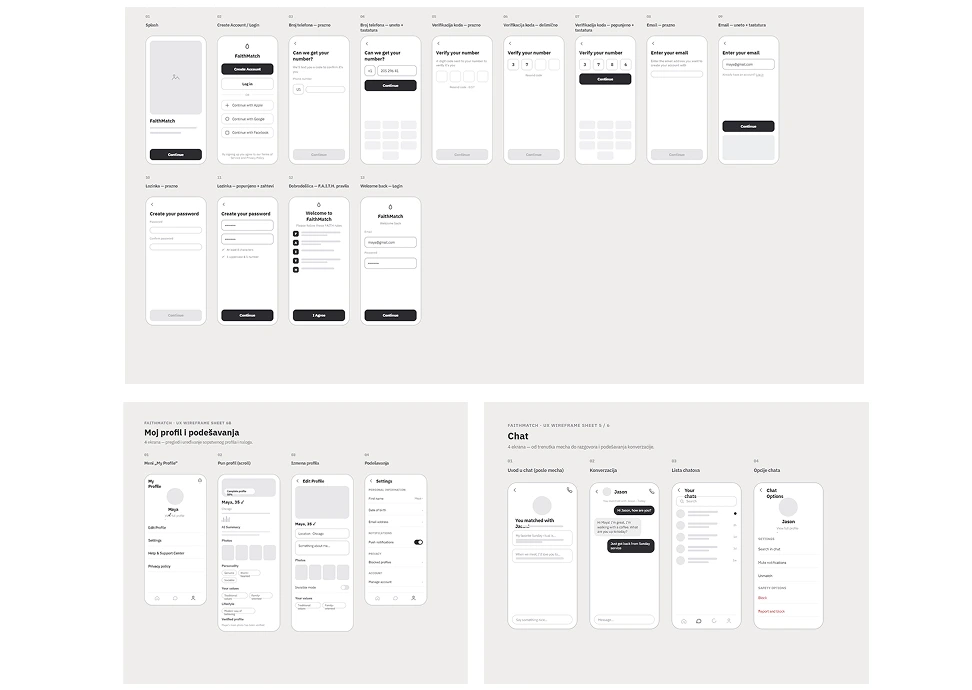
07 · eksploracije07 · explorations
Revizija dizajna i unapređenje UX-a Design revision and UX improvement
Moj mentor bi znao da kaže: „Što više dizajna ekrana uradiš, to bolji dizajner postaješ!”
Nekada bih se stvarno zanela u tome i probala više kombinacija pre nego što bih došla do one prave.
Ali bih se takođe trudila da svakom revizijom smanjim broj UX problema, velikih i malih, što me je dovodilo korak bliže
željenom izgledu i boljem funkcionisanju same aplikacije.
Kroz taj proces sam naučila da najbolja rešenja retko dolaze iz prve, već dolaze iz spremnosti da odbaciš ono što je „skoro dobro”.
My mentor used to say: “The more screens you design, the better a designer you become!”
Sometimes I would really get carried away with it, trying several combinations before landing on the right one.
But I also tried, with every revision, to reduce the number of UX problems, large and small, which brought me a step closer to
the look I wanted and to the app working better.
Through that process I learned that the best solutions rarely come first. They come from being willing to throw away what is “almost good”.
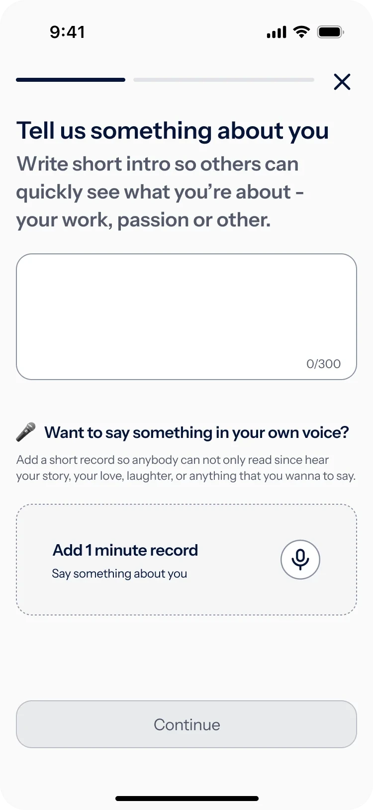
Marija Madjarac
Tekst i glasovnu poruku nekako spojiti u jednu opciju: snima se glasovna poruka, a AI treba da izvlači 3 ključne rečenice koje možeš da koriguješ ako misliš da treba.Merge text and the voice message into one option: you record a voice message, and AI should pull out 3 key sentences that you can edit if needed.
Marija Madjarac
Ikonicu staviti levo i smanjiti razmak između ikonice i teksta.Move the icon to the left and reduce the space between the icon and the text.
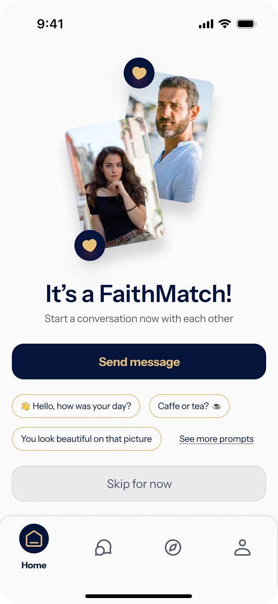
Marija Madjarac
Ovaj deo skloniti i dodati ga iznad Send message, kao obaveštenje. Prvu poruku dodati na Chat ekran i da bude personalizovana na osnovu izabranih interesovanja, da nije ovako generična.Remove this section and add it above Send message as a notification. Move the first message to the Chat screen and personalise it based on the selected interests, so it isn’t this generic.
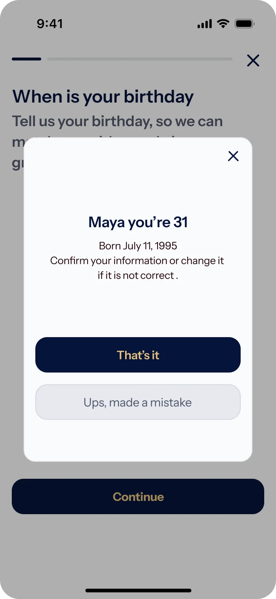
Marija Madjarac
Smanjiti ovo polje, pošto ima dosta praznog prostora.Make this panel smaller; there’s a lot of empty space.
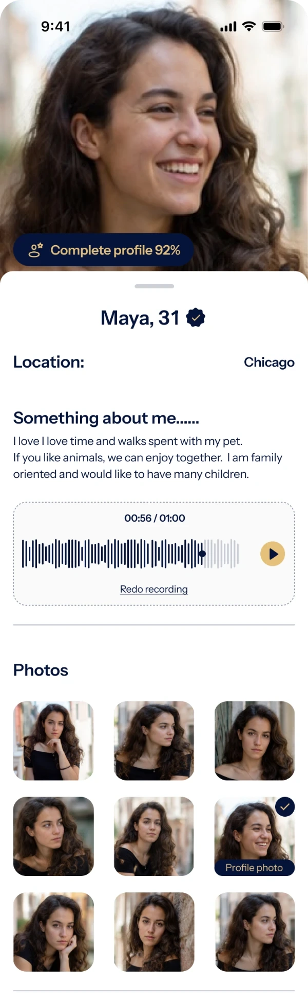
Marija Madjarac
AI treba da izbaci o čemu je pričano u poruci, da bi neko video da li uopšte želi da presluša ovu glasovnu poruku.AI should summarise what the message is about, so people can decide whether they even want to listen to this voice message.
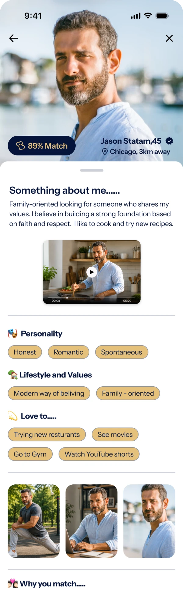
Marija Madjarac
Povećati video na kompletnu širinuExpand the video to full width
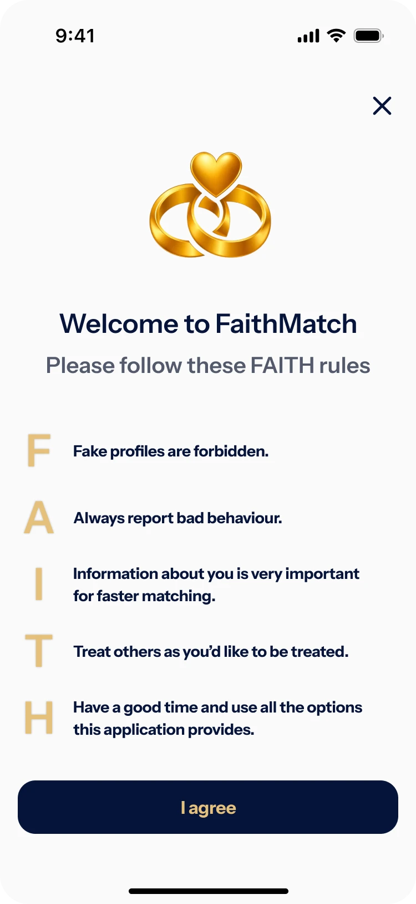
08 · ZA POČETAK: KULTURA PONAŠANJATo begin with, a culture of conduct
FAITH pravilaThe FAITH rules
Pre ulaska u aplikaciju svaki korisnik prihvata pet kratkih pravila. Cilj je da se ton zajednice postavi pre prve interakcije.
F · Fake profiles are forbidden. Ovo pravilo zabranjuje lažne profile i botove, koje je 45% ispitanika navelo među svoje tri najveće pritužbe (Q7).
A · Always report bad behaviour. Korisnicima se preporučuje da uvek prijave loše ponašanje, jer tako sami čuvaju bezbednost zajednice.
I · Information about you is very important for faster matching. Što je profil potpuniji, lakše je proceniti da li se vrednosti i namere poklapaju. Ovo se nadovezuje na Q6, gde je 80% ispitanika reklo da se profil često ili ponekad ne poklapa sa stvarnošću.
T · Treat others as you’d like to be treated. Podseća na poštovanje u komunikaciji, što je jako bitno korisnicima kojima su moralne vrednosti važne.
H · Have a good time and use all the options this application provides. Drži ton pozitivnim i podstiče korisnike da isprobaju glasovnu poruku, video i AI sažetak.
Da li korisnici pravila čitaju i kako ih razumeju, treba proveriti testiranjem.Before entering the app, every user accepts five short rules. The goal is to set the tone of the community before the first interaction.
F · Fake profiles are forbidden. This rule bans fake profiles and bots, which 45% of respondents named among their top three complaints (Q7).
A · Always report bad behaviour. Users are encouraged to always report bad behaviour, because that is how they help keep the community safe.
I · Information about you is very important for faster matching. The more complete a profile is, the easier it is to judge whether values and intentions align. This builds on Q6, where 80% of respondents said profiles often or sometimes do not match reality.
T · Treat others as you’d like to be treated. A reminder of respect in communication, which matters a great deal to users who care about moral values.
H · Have a good time and use all the options this application provides. Keeps the tone positive and encourages users to try the voice note, video and AI summary.
Whether users actually read the rules and how they understand them still needs to be validated through testing.
09 · OnboardingOnboarding
Onboarding koji otkriva nameruOnboarding that reveals intent
Umesto da traži samo ime i fotografiju, FaithMatch od početka pita o veri, o tome koliko je važna u svakodnevnom životu i o stavovima prema braku, deci i navikama. Pitanja imaju tri svrhe: bolje poklapanje, uvid u nameru korisnika i jasan signal da je ovo aplikacija za ljude koji žele ozbiljnu vezu.
Pitanja su obavezna, ali ih korisnik može jednom da preskoči. Posle kratkog vremena aplikacija ga ponovo pita. Ako preskoči i drugi put, profil ostaje neaktivan dok ne odgovori.Instead of asking only for a name and a photo, FaithMatch asks from the start about faith, how important it is in everyday life, and about views on marriage, children and habits. The questions serve three purposes: better matching, insight into the user’s intent, and a clear signal that this is an app for people who want a serious relationship.
The questions are mandatory, but a user can skip them once. After a short while, the app asks again. If they skip a second time, the profile stays inactive until they answer.
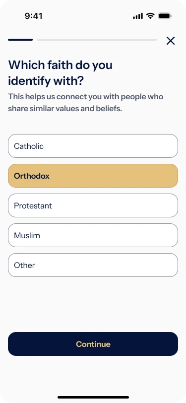
Izbor veroispovestiChoice of faith
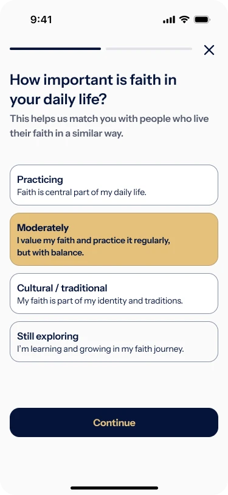
Koliko je vera važnaHow important faith is
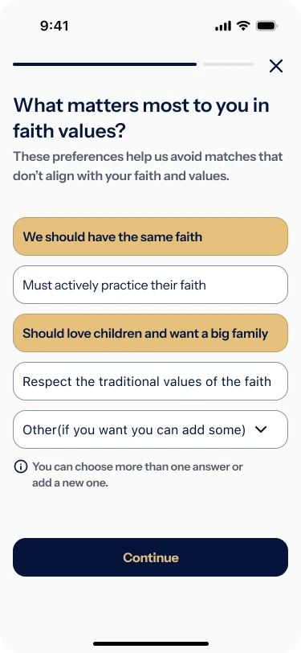
Vrednosti i očekivanjaValues and expectations
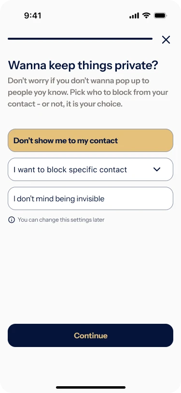
PrivatnostPrivacy
10 · Srce proizvodaThe heart of the product
Pokazati osobu iza slikeShowing the person behind the photo
Ovo je odluka na kojoj cela aplikacija stoji. Svako može da napiše da redovno odlazi u crkvu ili džamiju i da voli decu, a da to ne bude istina, čak ni približno. Zato profil na FaithMatch‑u nije samo galerija fotografija. Dodala sam tri sloja koja pokazuju više nego fotografija:
Story – svakodnevni trenuci (porodica, nedeljno jutro u crkvi ili petak u džamiji) koji pokazuju kako neko zaista živi.
Glasovno predstavljanje – ton glasa otkriva toplinu i iskrenost koju tekst krije.
Video od 1 minuta – kratko „uživo” predstavljanje.
This is the decision the whole app stands on. Anyone can write that they regularly go to church or the mosque and love children without it being true. So a FaithMatch profile isn’t just a gallery of photos. I added three layers that show more than a photo can:
Stories: everyday moments (family, a Sunday morning at church or Friday at the mosque) that show how someone actually lives.
Voice intro: tone of voice reveals warmth and honesty that text hides.
A 1‑minute video: a short “live” introduction.
Dodavanjem opcije Story htela sam da korisnik stekne pravu sliku o osobi sa kojom se mečuje. Ne samo kako ta osoba izgleda fizički, već kakav je čovek.
Uz dužno poštovanje svih koji koriste ovakve aplikacije, komentari na koje sam ja nailazila u razgovoru sa svojim drugaricama su da se osobe predstave kao da su porodične i naklonjene svojoj veri, a kada ih upoznaš, bude sasvim suprotno od toga, i to ubija aplikacije, a i samu volju korisnika da se vraća na aplikacije i da ih koristi. By adding Stories, I wanted people to form a true picture of the person they might match with. Not only how that person looks, but what kind of person they are.
With all due respect to everyone who uses apps like these, the comments I kept hearing from my friends were that people present themselves as family‑minded and devoted to their faith, and then when you meet them it is the complete opposite, and that kills the app, along with any will to come back and keep using it.
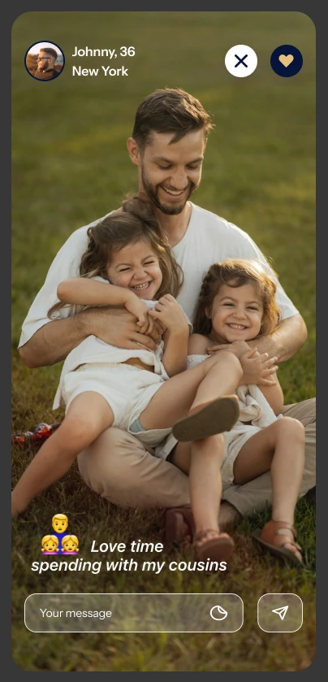
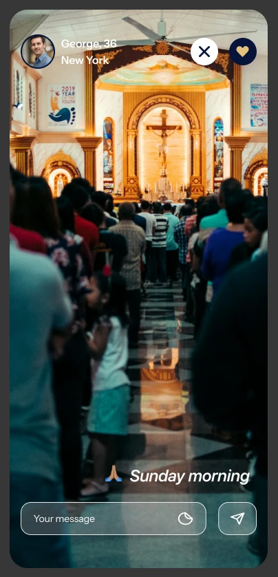
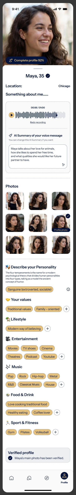
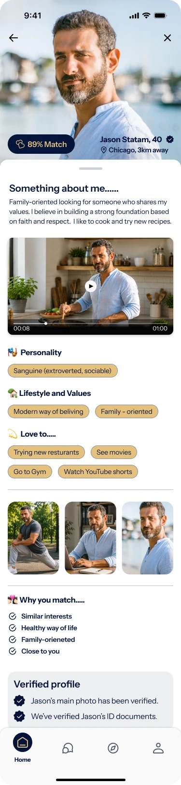
Kroz malo drugačiji format profila osobe koja je ulogovana i osobe sa kojom se mečujemo, htela sam da stvorim osećaj bliskosti i poverenja, tako da kroz audio i video predstavljanje imamo jasniju sliku o drugoj osobi sa kojom se povezujemo.
Glasovna poruka i video o sebi su opcioni prilikom popunjavanja profila. Osoba može da ih doda odmah na početku, kasnije, ili da ih ne dodaje uopšte ako tako želi.
AI sažetak glasovne poruke pretvara snimak u par rečenica koje se lako skeniraju, pa se brzo dolazi do suštine onoga o čemu korisnik govori. With a slightly different profile format for the logged‑in user and for the person we are matching with, I wanted to create a sense of closeness and trust so that through audio and video introductions we get a clearer picture of the other person we are connecting with.
The voice note and the video introduction are optional when filling out the profile. A person can add them right at the start, later on, or not at all if they prefer.
The AI summary turns the voice note into a couple of sentences that are easy to scan, so we quickly reach the essence of what the user is talking about.
11 · Pametno povezivanjeSmart matching
Manje predloga, ali više pravih mečevaFewer suggestions, but more real matches
Umesto beskonačnog niza, FaithMatch predlaže ograničen broj ljudi dnevno. Svaka kartica nosi procenat poklapanja i jednu konkretnu zajedničku vrednost („Oboje stavljate porodicu i decu na prvo mesto”). Instead of an endless stream, FaithMatch suggests a limited number of people per day. Each card carries a match percentage and one concrete shared value (“You both put family and children first”).
Objašnjenje poklapanja radi dve stvari: gradi poverenje u algoritam i daje prirodan povod za prvu poruku. Ograničenje broja predloga smanjuje zamor od mnoštva izbora, pa je i celo iskustvo lakše i prirodnije.Explaining the match does two things: it builds trust in the algorithm and gives a natural reason for the first message. Capping the number of suggestions reduces choice fatigue, so the whole experience feels lighter and more natural.
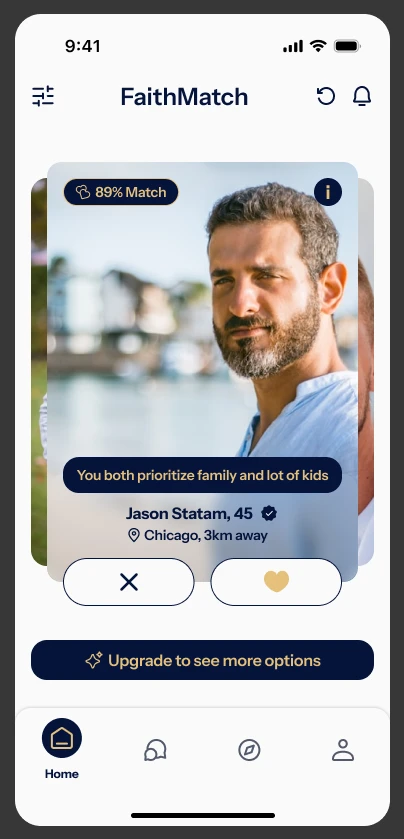
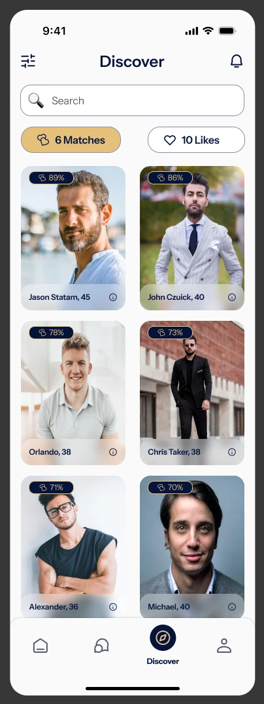
12 · Razgovor i bezbednostConversation & safety
Lagan razgovor, uz punu kontroluEasy conversation, with full control
Nakon poklapanja, umesto praznog polja za poruku, korisnik dobija predloge tema (na osnovu profila druge osobe) sa kojima bi mogao da započne razgovor, npr. „Moje idealno nedeljno popodne…”. To smanjuje neprijatnost prvog koraka i podstiče smislen razgovor, posebno za ljude poput Jasona, kojima prazan ekran deluje nezgodno. Uz to, opcije bezbednosti (utišavanje, prekid poklapanja, blokiranje i prijava) su na dohvat ruke u svakom razgovoru.After a match, instead of an empty message field, the user gets prompts tied to the other person’s profile (“My ideal Sunday afternoon…”). This lowers the awkwardness of the first step and encourages a meaningful exchange, especially for people like Jason, who find a blank screen hard. Safety options (mute, unmatch, block and report) are one tap away in every chat.
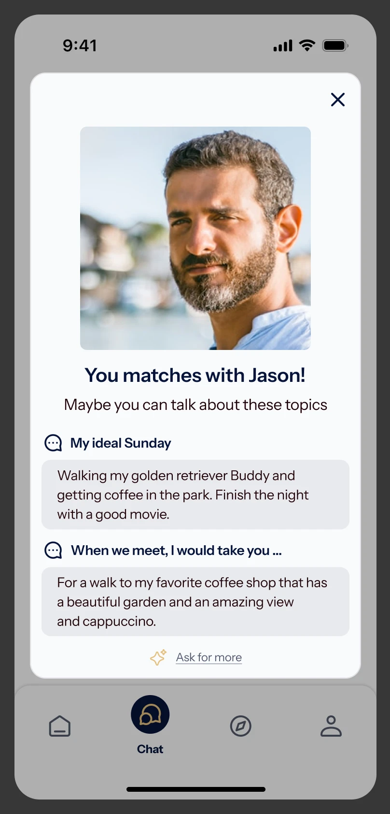
Promptovi nakon poklapanjaPrompts after a match
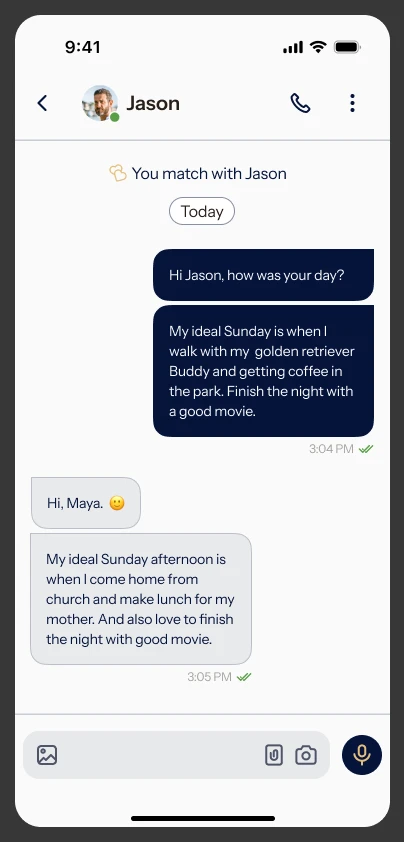
RazgovorConversation
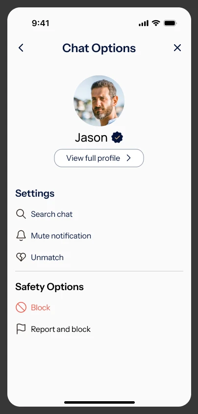
Opcije bezbednostiSafety options
13 · Pretraga i pretplataDiscover & subscription
Filtriranje po vrednostima i pretplata bez zamkiValue‑based filters and a subscription without traps
Discover dozvoljava filtriranje po lokaciji, interesovanjima, ličnosti, stilu života i vrednostima i ima „oko mene” mapu za ljude u blizini sa zajedničkim interesovanjima.
Pretplata (Basic, Premium, Diamond) je transparentna, a korisnik može da je pauzira ili otkaže direktno u aplikaciji. Kontrola nad novcem je deo istog obećanja o poverenju kao i kontrola nad privatnošću.Discover allows filtering by location, interests, personality, lifestyle and values, and it has an “around me” map for nearby people with shared interests. The subscription (Basic, Premium, Diamond) is transparent, and the user can pause or cancel it directly in the app. Control over money is part of the same trust promise as control over privacy.
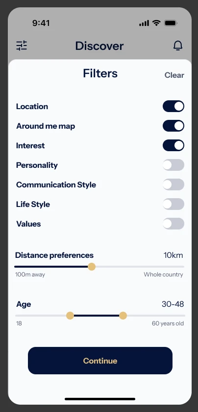
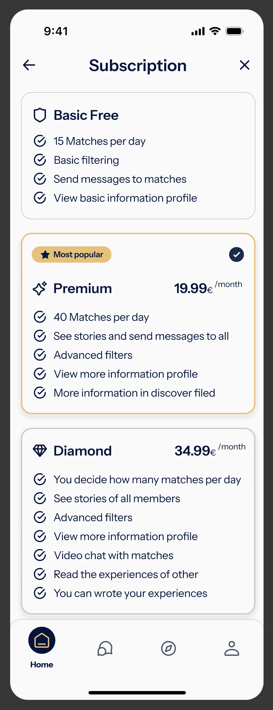
14 · RefleksijaReflection
Šta sam naučila i šta bih daljeWhat I learned and what’s next
Najveća lekcija: dizajn aplikacija je mnogo više od dizajniranja lepih ekrana. Proces je mnogo kompleksniji od toga, a samim tim mi je i mnogo zanimljiviji. Po struci sam grafički dizajner, ali deo istraživanja i ankete bio mi je veoma izazovan i inspirativan, a toga u samom grafičkom dizajnu nema.
Zaista bih želela da testiram svoja dizajnerska rešenja i vidim kako se ponašaju u stvarnoj upotrebi. Pošto je ovo projekat gde sam morala sve da uradim sama, nisam mogla da sprovedem testove upotrebljivosti i proverim svoje pretpostavke i ideje koje se zasnivaju na istraživanju korisnika.
Ono što bih uradila dalje: testirala bih dužinu onboarding‑a (gde ljudi odustaju?), proverila da li AI sažetak glasa deluje korisno ili kao gubitak autentičnosti, i sprovela intervjue sa vernicima različitih zajednica da potvrdim da se osećaju predstavljeno, a ne svrstano u kalup. To su pretpostavke koje tek treba proveriti.
Zaključak nakon rada na ovom projektu: svaku odluku treba da vežem za konkretan problem korisnika, a ne za ličnu estetsku želju. Kao grafičkom dizajneru, to mi je na početku bio veliki problem. Rešavala sam ga tako što sam se vraćala na istraživanje i citate ispitanika. Kada bih na stvar pogledala iz njihove perspektive, rešenje bi bilo jasnije i brže.
Naučila sam i da moram da razumem i predvidim mentalne modele korisnika, i da ne smem da mislim da sam ja korisnik. Na ovom projektu sam videla da je razumevanje ljudskog ponašanja ključno za dobar UI/UX dizajn. Taj deo procesa primenjivaću u svakom sledećem projektu.
U septembru sam studiju slučaja pokazala mentoru sa kursa i doradila je na osnovu primedbi. Završila sam je u oktobru 2026.
Hvala na izdvojenom vremenu i pažnji. Nadam se da je ovaj proces bio zanimljiv tebi koliko i meni.
The biggest lesson: Designing an app is much more than designing beautiful screens. The process is much more complex than that, and that is exactly what makes it so interesting to me. I am a graphic designer by profession, but the research and survey part was genuinely challenging and inspiring for me, because that is something graphic design itself doesn’t involve.
I would truly love to test my design solutions and see how they behave in real use. Since this was a project where I had to do everything myself, I was not able to run usability tests and check my own assumptions and ideas, which are grounded in user research.
What I would do next: test the length of the onboarding (where do people drop off?), check whether the AI voice summary reads as useful or as a loss of authenticity, and run interviews with believers from different communities to confirm they feel represented rather than boxed in. Those are some of the assumptions still waiting to be validated.
My conclusion after working on this project: every decision should be tied to a concrete user problem, not to a personal aesthetic preference. As a graphic designer, I found this hard at first. I worked through it by going back to the research and to the respondents’ own words. Whenever I looked at things from their perspective, the solution became clearer and came faster.
I also learned that I have to understand and anticipate users’ mental models, and that I must never assume I am the user. This project showed me that understanding human behaviour is key to good UI/UX design. I will apply this part of the process in every project that follows.
In September I showed the case study to my course mentor and refined it based on the feedback. I finished it in October 2026.
Thank you for your time and attention. I hope this process was as interesting for you as it was for me.
Hajde da sarađujemoLet’s work together
Otvorena sam za nove projekte i saradnjeOpen to new projects and collaborations
Ako ti se dopada moj rad i proces kojim dolazim do rešenja, rado ću čuti više o tvom projektu ili poziciji. Javi mi se na mejl.If you like my work and the process behind it, I’d love to hear about your project or role. Drop me an email.